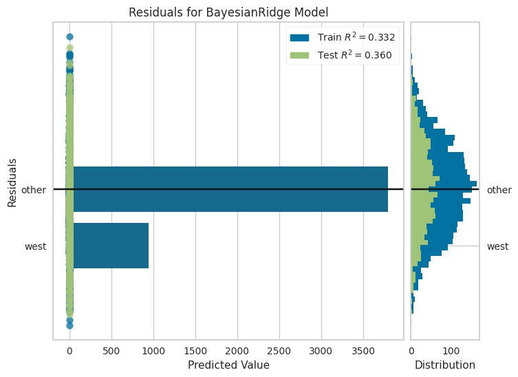

Creating a model
Approach
As main approach to create a model pycaret library was chosen.
The reason is pycaret provides structured and easy API to create, evaluate and tune model.
Setting up a pycaret
pycaret setup
Description:
data_df: data.target: target feature to predict.test_df: because we split data on our own, we can pass our test data to pycaret.remove_outliers: removes statistical outliers from the data.fold_strategy: The method of folds.fold_shuffle: Does folds needs to be shuffled.fold: cross-validation for selected model.session_id: allows to replicate experiment.normalize: does normalization should be applied:use_gpu: allows pycaret to use gpu to speed things up.index: Indicates whether data has an index column.
Output:
lots of logs
| Model | MAE | MSE | RMSE | R2 | RMSLE | MAPE | TT (Sec) |
|---|---|---|---|---|---|---|---|
| gbr Gradient Boosting Regressor | 0.6551 | 0.6549 | 0.8085 | 0.3407 | 0.3708 | 1.9342 | 0.2800 |
| br Bayesian Ridge | 0.6616 | 0.6578 | 0.8103 | 0.3378 | 0.3807 | 1.9395 | 0.1133 |
Note
Given output show only two the best models. Full output table is much larger.
The table shows us, that the best model for this dataset with described analysis and preprocessing is Bayesian Ridge. Best results in all metrics.
Model evaluation
| Fold | MAE | MSE | RMSE | R2 | RMSLE | MAPE |
|---|---|---|---|---|---|---|
| 0 | 0.6477 | 0.6644 | 0.8151 | 0.3104 | 0.3651 | 1.3917 |
| 1 | 0.6265 | 0.6169 | 0.7854 | 0.4017 | 0.3688 | 1.5117 |
| 2 | 0.6315 | 0.6061 | 0.7785 | 0.4055 | 0.3722 | 1.5609 |
| 3 | 0.6703 | 0.6709 | 0.8191 | 0.3111 | 0.3684 | 2.0291 |
| 4 | 0.6599 | 0.6467 | 0.8041 | 0.3387 | 0.3938 | 1.7867 |
| 5 | 0.6202 | 0.6732 | 0.8205 | 0.3154 | 0.3562 | 1.5384 |
| 6 | 0.6903 | 0.6919 | 0.8318 | 0.2701 | 0.3808 | 1.7269 |
| 7 | 0.6466 | 0.6363 | 0.7977 | 0.3843 | 0.3434 | 1.6471 |
| 8 | 0.6668 | 0.6636 | 0.8146 | 0.3884 | 0.3865 | 1.9079 |
| 9 | 0.6010 | 0.5180 | 0.7197 | 0.4116 | 0.3529 | 3.1464 |
| 10 | 0.6446 | 0.6047 | 0.7776 | 0.3992 | 0.3720 | 3.4132 |
| 11 | 0.6676 | 0.6908 | 0.8311 | 0.3463 | 0.3898 | 1.8291 |
| 12 | 0.6585 | 0.6681 | 0.8174 | 0.2165 | 0.3535 | 1.3079 |
| 13 | 0.7243 | 0.7756 | 0.8807 | 0.3356 | 0.4085 | 2.2211 |
| 14 | 0.6706 | 0.6969 | 0.8348 | 0.2763 | 0.3498 | 1.9954 |
| Mean | 0.6551 | 0.6549 | 0.8085 | 0.3407 | 0.3708 | 1.9342 |
| Std | 0.0290 | 0.0550 | 0.0344 | 0.0563 | 0.0178 | 0.5815 |
Model diagram

However...
Our model is overfitted to the train dataset, which is huge problem, because usability of the model is zero.
Therefore, tuning is needed.
Tuning the model
And after tuning we can visualise our data performance.
Residuals 
Validation Curve

Features importance

Prediction Error

Afterwords
Model is located model.pkl in the GH actions artifacts.
All details and logs of the experiments can be found in the actions artifacts. Look for logs.txt (pycaret logs) and
logging.txt (whole experiment logs).
As we can see in the Feature Importance plot, the education has the bigger impact on the end score for the students.
Moral? Study hard and tests will be passed! 🙂